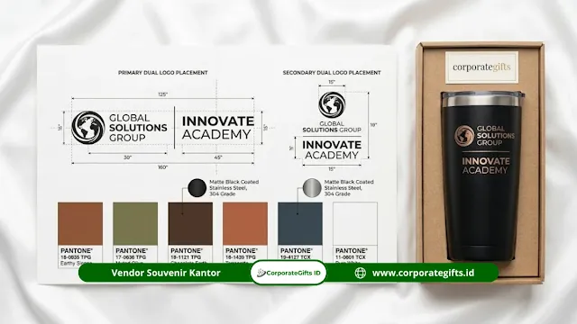

Corporate Gifts ID - Kustomisasi souvenir mitra kampus swasta adalah proses merancang dan memproduksi cinderamata eksklusif yang memadukan dua identitas visual sekaligus, yaitu logo institusi mitra penerima dan logo perguruan tinggi swasta (PTS) pemberi. Tata letak, proporsi, dan akurasi warna disusun berdasarkan panduan identitas merek (brand guideline) yang telah disepakati oleh kedua belah pihak.
Dalam seremoni penandatanganan Nota Kesepahaman (MoU), Memorandum of Agreement (MoA), maupun kunjungan industri, cinderamata dual-logo menjadi simbol diplomasi kelembagaan yang menegaskan hubungan kolaboratif jangka panjang yang setara dan saling menguntungkan.
Poin Kunci Kustomisasi Dual-Logo:
- Keseimbangan Visual: Proporsi kedua logo wajib simetris agar tidak ada kesan satu instansi mendominasi pihak lain.
- Aset Vektor Presisi: Penggunaan file AI atau EPS memastikan logo tidak pecah atau bergerigi saat dicetak pada media kecil.
- Standarisasi Warna Pantone: Menghilangkan risiko deviasi warna logo resmi kampus di berbagai material produk.
- Validasi Mockup Tertulis: Menghindari kesalahan produksi massal dengan persetujuan digital resmi sebelum proses pabrikasi.
Apa Itu Kustomisasi Dual-Logo pada Souvenir Mitra Kampus Swasta?
Kustomisasi dual-logo pada souvenir mitra kampus swasta adalah penyusunan tata letak dua logo dalam satu kesatuan produk cinderamata secara harmonis. Berdasarkan data industri pengadaan korporat di Indonesia, sekitar 78% cinderamata untuk acara penandatanganan kerja sama resmi menerapkan format dual-logo sebagai standar protokoler kemitraan.
Perguruan tinggi swasta di Indonesia, yang berjumlah lebih dari 3.500 institusi aktif (data APTISI), umumnya memiliki brand guideline yang modern dan fleksibel. Hal ini memberikan ruang eksplorasi desain yang elegan, baik untuk tata letak horizontal berdampingan dengan garis pemisah vertikal tipis, maupun tata letak bertingkat atas-bawah.
Mengapa Dual-Logo Penting dalam Souvenir Mitra Kampus?
Penerapan dua logo pada paket souvenir custom VIP memiliki nilai strategis yang signifikan:
- Representasi Kesetaraan Kemitraan: Menunjukkan bahwa kerja sama yang terjalin adalah kolaborasi sinergis antara dunia akademik dan dunia industri.
- Etiket dan Protokoler Kelembagaan: Menghindari kecemburuan protokoler karena kedua pimpinan institusi merasa dihargai dengan kehadiran lambang resmi masing-masing.
- Nilai Branding Ganda: Setiap kali souvenir digunakan di meja kerja mitra, identitas kampus swasta dan perusahaan terus tampil berdampingan secara profesional.
Persiapan File dan Standarisasi Warna Pantone
Agar proses produksi berjalan lancar tanpa kendala teknis, tim humas kampus dan panitia pengadaan perlu menyiapkan aset grafis standar:
Format File yang Wajib Disiapkan
- File Vektor Master (AI / EPS / PDF Vector): Format mutlak yang dibutuhkan agar garis outline logo tetap tajam saat diskalakan ke ukuran kecil seperti pulpen metal atau besar seperti plakat akrilik.
- File PNG Transparan Resolusi Tinggi (300 DPI): Dapat digunakan sebagai alternatif untuk cetak UV flatbed, namun kurang optimal untuk proses grafir laser mesin presisi.
- Hindari File JPG atau Screenshot Web: Gambar hasil tangkapan layar memiliki resolusi rendah (72 DPI) yang akan terlihat buram dan pecah saat dicetak fisik.
Peran Kode Warna Pantone (PMS)
Sistem pencocokan warna Pantone (Pantone Matching System) adalah acuan global dalam reproduksi warna cetak. Dengan mencantumkan kode Pantone resmi dari brand book kampus, warna biru dongker, hijau toska, atau merah marun khas almamater akan tercetak 100% konsisten di atas bahan kanvas, kulit sintetis, maupun bodi tumbler logam.

Spesifikasi teknis penempatan dual-logo primer dan sekunder lengkap dengan dimensi ukuran serta kode warna Pantone pada gift box tumbler hitam eksklusif.
Tabel Checklist Persiapan Kustomisasi Dual-Logo
Berikut matriks panduan teknis yang harus dipersiapkan sebelum mengirimkan berkas desain ke vendor:
| Komponen / Parameter | Standar Teknis | Tujuan & Manfaat |
|---|---|---|
| Format File Logo | Adobe Illustrator (.AI), .EPS, atau .PDF Curves | Hasil cetak tajam tanpa pecah di segala ukuran produk |
| Standarisasi Warna | Pantone Solid Coated (PMS) | Warna logo kampus akurat dan seragam di semua media |
| Rasio Tata Letak | Proporsional 50:50 dengan jarak aman (clear space) | Menjaga keseimbangan estetika dan etika protokoler |
| Pemisah Visual | Garis pembatas tipis atau simbol tanda silang (x) / strip | Memperjelas batas identitas kedua instansi yang bermitra |
| Validasi Desain | Mockup approval sheet digital bertanda tangan | Mencegah salah cetak sebelum masuk tahap pabrikasi massal |
Proses Mockup Approval: Kenapa Tidak Boleh Dilewati?
Tahap mockup approval adalah langkah validasi visual produk sebelum proses pabrikasi fisik dijalankan:
Poin Krusial yang Wajib Diperiksa
- Keseimbangan Ukuran: Pastikan ukuran logo mitra tidak terlihat jauh lebih kecil atau lebih besar dibanding logo kampus.
- Keterbacaan Teks: Periksa ejaan nama fakultas, prodi, atau divisi perusahaan dan pastikan teks tetap terbaca jelas.
- Posisi dan Area Cetak: Verifikasi letak logo pada bodi tumbler, sampul buku agenda, maupun plat logam kotak hampers.
Batasan Revisi dan Efisiensi Waktu
Umumnya vendor memberikan 2 hingga 3 kali revisi mockup digital tanpa biaya tambahan. Untuk mempercepat proses, siapkan arahan desain (brief) yang terperinci sejak awal diskusi.
Teknik Produksi yang Relevan untuk Souvenir Mitra Kampus
Pilihan metode cetak sangat menentukan impresi akhir cinderamata kemitraan:
- Laser Engraving (Grafir Laser): Mengikis permukaan logam atau kayu secara permanen. Sangat cocok untuk tumbler stainless, plakat kayu, dan pulpen eksekutif pada acara formal penandatanganan MoU.
- UV Flatbed Printing: Menghasilkan cetakan multi-warna beresolusi tinggi dengan ketajaman warna sempurna pada powerbank, flashdisk kartu, dan kotak kemasan akrilik.
- Sablon Presisi (Screen Printing): Solusi efisien untuk merchandise kain seperti tote bag seminar, pouch kanvas, atau payung lipat kemitraan dalam jumlah besar.
Kesimpulan Praktis: Souvenir Kemitraan yang Berkelas
Kustomisasi souvenir mitra kampus swasta yang sukses berakar pada persiapan aset visual yang tepat, standarisasi warna Pantone yang akurat, serta pemilihan teknik cetak bermutu tinggi. Hasil cinderamata yang elegan akan memperkuat reputasi kampus swasta Anda sebagai institusi pendidikan tinggi yang kredibel dan profesional.
Rencanakan pengadaan cinderamata MoU kemitraan kampus Anda bersama layanan souvenir custom CorporateGifts.ID. Kami siap membantu pembuatan mockup digital gratis dan kurasi paket cinderamata berkelas.